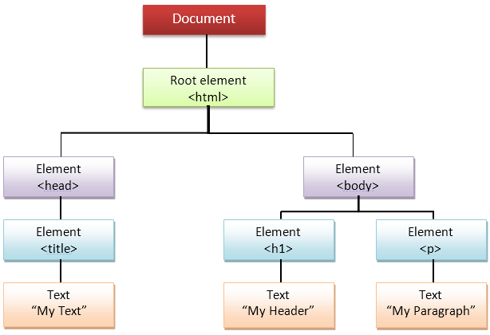

DOM is a way to represent the web page in a structure hierarchical way so that it will become easier for programmers and users to guide through the document. With DOM, we can easily access and manipulate tags, IDs, classes, Attributes, or Elements of HTML using commands or methods provided by the Document object.
Using Dom, the JavaScript gets access to HTML as well as CSS of the web page and can also add behaviour to the HTML elements. So basically Document Object Model is an API that represents and interacts with HTML or XML documents.
